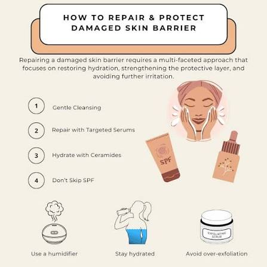

Morning vs. Night Care
Your skin needs protection during the day and repair during the night. Learn how to adjust your routine for AM and PM to maximize your skincare results.
How to Fix a Damaged Barrier

Redness, irritation, and sudden breakouts are signs of a damaged skin barrier. Discover the essential steps to soothe and heal your skin barrier fast.
The Truth About Sunscreen
Sunscreen is the ultimate anti-aging product. We review different types of UV filters and help you find a lightweight, white-cast-free sunscreen for daily wear.